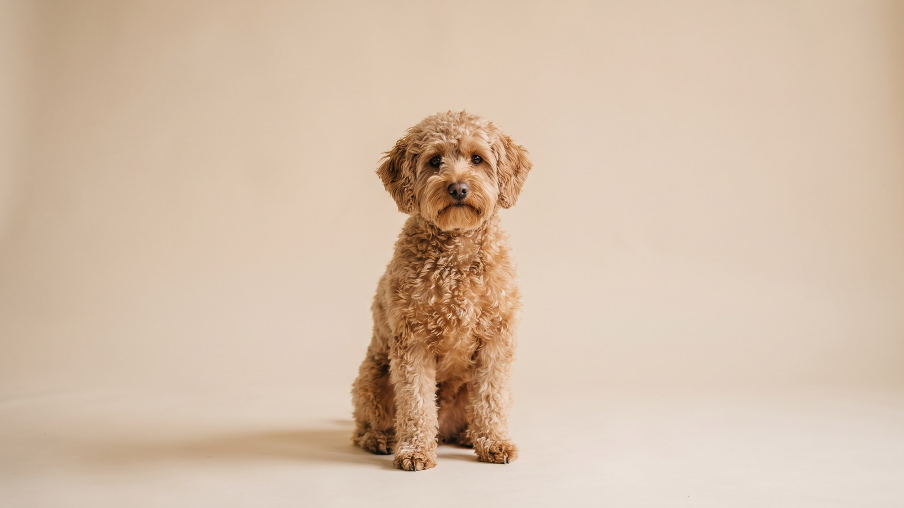

Шнудель почти не оставляет шерсти на диване. Этот факт продаёт его быстро. Но за беспроблемной шерстью скрываются колтуны за неделю и стрижка раз в полтора месяца. Плюс характер: достаточно умный, чтобы найти хитрую лазейку, если хозяин не выстроил правила. Три вещи, к которым стоит быть готовым до покупки щенка шнуделя.
🐾 Ваш питомец — шнудель?
Заведите профиль в AnimaLife: приложение запомнит породу, возраст и вес и будет подсказывать по уходу именно для неё. Вопросы AI-ветеринару — круглосуточно и бесплатно.
Завести профиль → Завести в MAX →
У вас iPhone? AnimaLife есть в App Store
Цвергшнауцер даёт шнуделю настороженность, бдительность и умение принимать самостоятельные решения. Пудель добавляет скорость обучения и желание работать с человеком. Получается собака, которая быстро запоминает команды, но так же быстро проверяет, работают ли они сегодня.
Шнудель хорошо подходит активным людям, готовым регулярно заниматься обучением. К одному хозяину привязывается крепче, чем к остальным членам семьи, и плохо переносит долгое одиночество. Оставить на 8 часов без подготовки: почти гарантированный испорченный угол дивана.
Шнудель наследует текстуру шерсти от обоих родителей. Получается вьющаяся или волнистая, мягкая или жёсткая. Линяет минимально: большинство хозяев не находят шерсть на мебели и одежде. Порода популярна у людей с чувствительностью к шерсти животных именно по этой причине.
Обратная сторона: такая шерсть не выпадает сама, а сваливается в колтуны. Без расчёсывания раз в 2–3 дня колтуны появляются за неделю, особенно за ушами, под мышками и на животе.
Шнудель некрупный, 5–10 кг в зависимости от помёта, но энергии в нём больше, чем ожидают при первом взгляде. Две прогулки по 30–40 минут в день с работой нюха или командами: минимум для спокойного поведения дома. Без достаточной нагрузки собака начинает занимать себя самостоятельно: грызть, копать, лаять.
Апортировка, нюховые игры, курсы послушания: шнудель находит в этом удовольствие. Мозговая нагрузка снимает возбуждение быстрее, чем просто пробежка.
Порода хорошо вписывается в жизнь людей, готовых тратить время на груминг и занятия. Первая собака у взрослого человека или семьи с детьми школьного возраста: рабочий вариант. Человек, который хочет собаку «чтобы просто жила» без тренировок и груминга каждые несколько недель, получит источник постоянного стресса с обеих сторон.
🐾 У вас шнудель?
AnimaLife соберёт уход под породу: к каким болезням есть склонность, что проверять по возрасту, чем кормить и когда пора к врачу. Бесплатно, прямо в мессенджере.
Собрать план ухода → Собрать в MAX →
У вас iPhone? AnimaLife есть в App Store
🐾 Понравился разбор?
Подпишитесь на канал — каждый день разбираем по одному тревожному симптому у кошек и собак: что в пределах нормы, а когда пора к врачу. Подпишитесь, чтобы не пропустить разбор, который может спасти здоровье вашего питомца.
Материал носит информационный характер и не заменяет очную консультацию ветеринара.